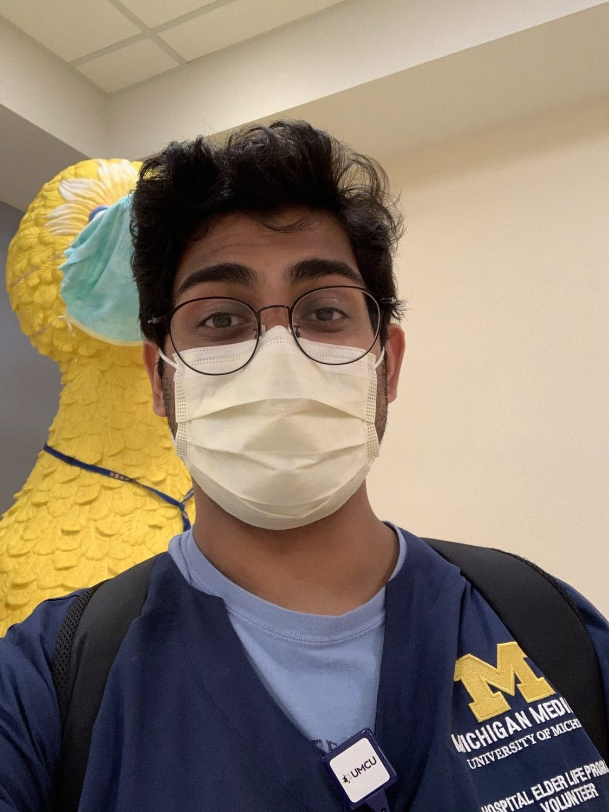

Hospital Elder Life Program
Volunteer · Michigan Medicine · 2022 – 2024
What is the Hospital Elder Life Program
About Us
Michigan Medicine's Hospital Elder Life Program (HELP) is a beacon of support for our elderly patients, ensuring their independence during hospital stays. Our dedicated HELP volunteers assist patients in various areas, from cognitive stimulation and mobility to addressing feeding, hearing, or vision needs where assistance is essential.
Our Mission
At HELP, we believe hospitals should be havens for elderly patients, empowering them to take an active role in their treatment and recovery. We're dedicated to:
- Maintaining patient orientation during their hospitalization.
- Preventing potential confusion or delirium.
- Addressing unique needs or concerns our patients may have.
- Enhancing communication to heighten patient satisfaction.
Our Interventions
We pride ourselves in offering a diverse range of services, including:
- Daily Visitor Program: Fostering patient alertness and orientation through consistent social interaction.
- Therapeutic Activities Program: Engaging patients in stimulating activities tailored to their interests.
- Early Mobilization Program: Ensuring our patients remain active with daily walking and exercise assistance.
- Feeding & Meal Assistance Program: Offering companionship and mealtime assistance.
- Relaxation Program: A holistic approach to relaxation and sleep, incorporating techniques such as massage, relaxation tapes, and bedside musicians.
Our Team
The HELP program, offered at no cost to eligible individuals, is the brainchild of a devoted team of geriatricians, an Elder Life Program social work coordinator, and specially trained volunteers. United in our mission, we strive to safeguard our elderly patients from the possible loss of independence that can sometimes accompany a hospital stay.
Hospital Elder Life Program Video
Some Pictures from the Hospital Elder Life Program

Drag to spin · click a photo to enlarge